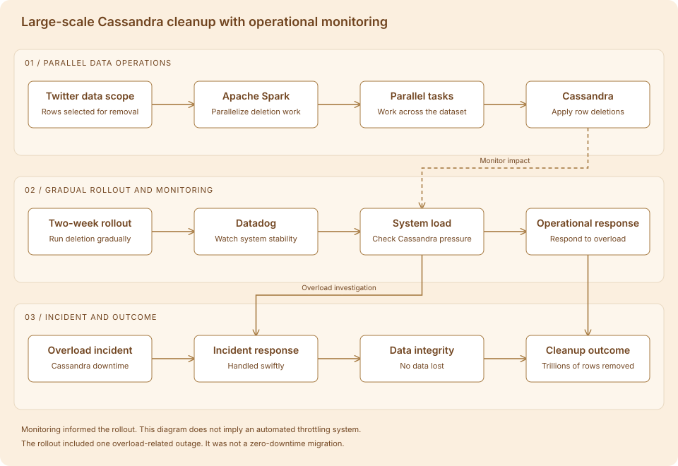

The problem
Twitter-related data in Khoros Marketing required removal at a scale of trillions of Cassandra rows. The work was a large-scale deletion, rather than a move to a new data store. Parallel execution had to be balanced against the stability of the Cassandra system.
My contribution
I used Apache Spark to parallelize the deletion and set up Datadog monitoring to track system stability. The migration progressed gradually over two weeks so that its load could be managed over time.
The central tradeoff
Parallelism made the deletion tractable, but it also increased pressure on the serving system. I needed to watch how Cassandra responded as the deletion progressed. Monitoring helped us see the effect of the work on the system while it was running.
The overload incident
Cassandra went down once during the rollout because of overload. We responded quickly, and no data was lost. The incident showed why we needed to watch the database as closely as the deletion jobs.
The result
We completed the cleanup over two weeks, removing trillions of Twitter-related rows. Datadog helped us track stability throughout the rollout.
What I learned
The main lesson was that a Spark job making progress can still put too much pressure on Cassandra. The database’s health mattered as much as the deletion rate.